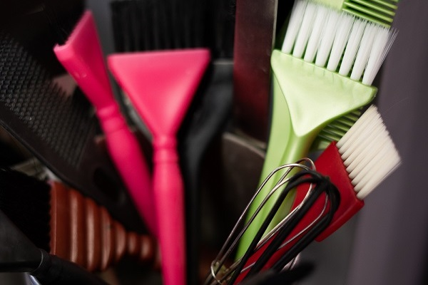
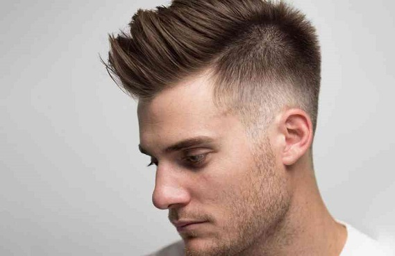
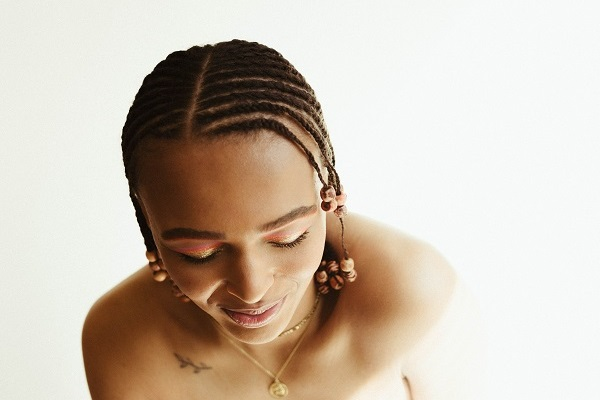
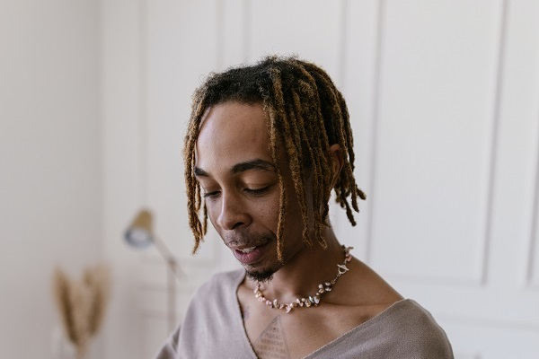

Service
Coloring ~ start from 500K

Coloring atau pengecatan rambut adalah sebuah metode untuk mengubah warna rambut. Alasan utamanya adalah untuk penampilan, untuk menutup rambut uban atau putih, untuk mengubah warna yang dianggap lebih baik dan stylish dengan tren masa kini.
Haircut ~ start from 200K

Hair Cut, memangkas rambut dengan model tertentu, bagi pria maupun wanita, jika kamu merencanakan untuk potong rambut menjadi pendek, ada beberapa jenis model rambut pendek
yang bisa menjadi referensi, seperti:
short and spiked, two block, french crop, textured crop,
dan lain sebagainya.
Shaving ~ start from 100K

Bercukur atau shaving adalah aktivitas menghilangkan helai rambut yang telah tumbuh dengan memotongnya dekat dari permukaan kulit. Alat yang digunakan untuk shaving adalah silet atau pisau cukur lainnya. Prosedur kecantikan ini dapat dilakukan di area tubuh mana saja yang ditumbuhi rambut (bulu). Mulai dari mencukur rambut kepala hingga mencukur bulu kaki
Cornrow ~ start from 700K

Cornrows atau canerows adalah gaya kepang tradisional di mana rambut dikepang sangat dekat dengan kulit kepala, menggunakan gerakan bawah tangan ke atas untuk membuat barisan terangkat terus menerus.
Dreadlock ~ start from 900K

Gimbal atau Dreadlock adalah helai rambut mirip tali yang berbentuk anyaman atau kepangan. Penggambaran rambut gimbal yang paling awal adalah dari lebih dari 2.000 tahun yang lalu.